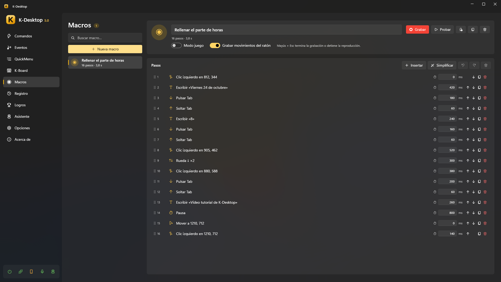
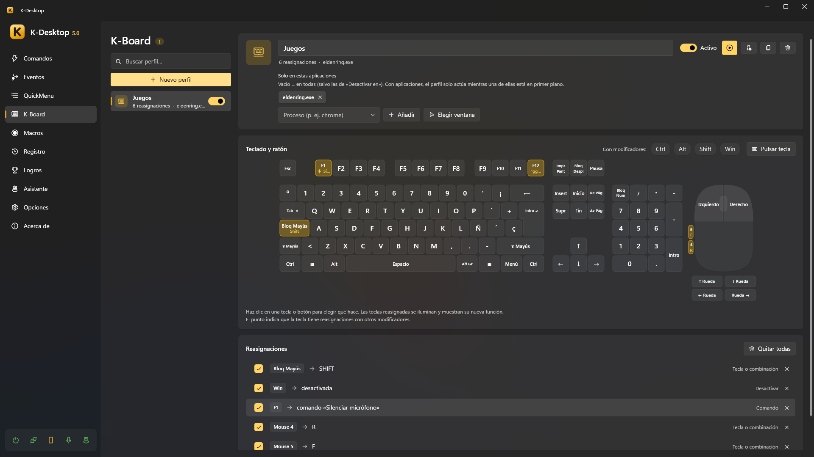

Macros y K-Board
Macros
Una macro guarda lo que haces con el teclado y el ratón, con sus tiempos, para repetirlo.

- Macros → Nueva macro y luego Grabar.
- Haz lo que quieras repetir. Mayús + Esc acaba la grabación (y para una reproducción).
- Cambia los pasos si quieres: pulsar o soltar una tecla, escribir un texto, un clic, mover el ratón, girar la rueda, una pausa… cada uno con su tiempo.
- Probar la reproduce una vez a los 3 segundos. Crear un comando que la reproduzca te deja un comando listo para darle un atajo.
Opciones:
- Grabar movimientos del ratón: apagado, solo se graban los clics (con su posición), la rueda y el teclado.
- Modo juego: para juegos. Los clics no mueven el puntero, el ratón se graba como movimiento relativo (lo que leen los juegos aunque bloqueen el puntero) y las teclas y clics se mantienen un momento para que el juego los vea. Los juegos con antitrampas pueden ignorar cualquier pulsación simulada.
- La acción Reproducir macro la reproduce una vez o varias, en bucle o a otra velocidad.
K-Board
K-Board cambia lo que hacen las teclas, los botones del ratón y la rueda, en todas partes o solo en los programas que elijas: Bloq Mayús como Ctrl, la tecla de Windows apagada en los juegos, botones laterales que copian y pegan…

- Un perfil es un conjunto de cambios. Puede haber varios encendidos a la vez.
- Haz clic en una tecla o un botón del teclado y el ratón dibujados (o Pulsar tecla para elegirla) y elige qué hace:
- otra tecla, botón o la rueda, mantenida mientras mantienes la original (vale para modificadores y en juegos);
- un texto que escribir, con cualquier distribución de teclado (los saltos de línea pulsan Intro);
- un comando (la tecla ya no llega al programa);
- nada (la tecla queda apagada mientras el perfil está encendido).
- Con modificadores: marca Ctrl, Alt, Mayús o Win para cambiar una combinación (Ctrl + J) en vez de la tecla sola.
- Solo en estas aplicaciones: vacío = en todas partes; con programas, el perfil solo actúa con uno de ellos delante.
- Ejecutar siempre: también en los programas de Desactivar en (un juego), donde los atajos de los comandos siguen apagados pero las teclas se siguen cambiando.
- Enciende y apaga un perfil aquí, desde la bandeja o desde un comando con la acción K-Board (Crear un comando que active y desactive este perfil).